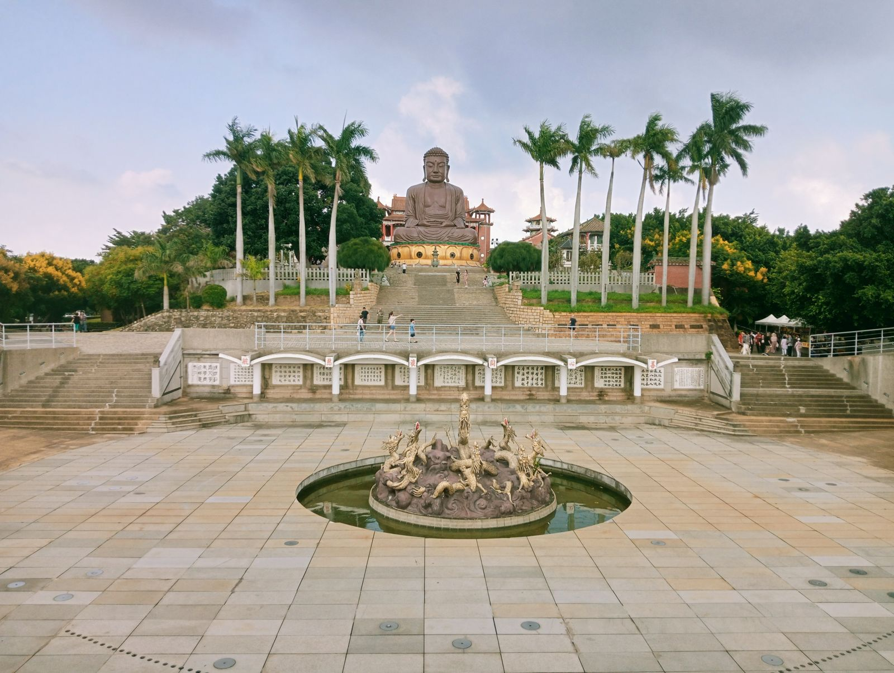
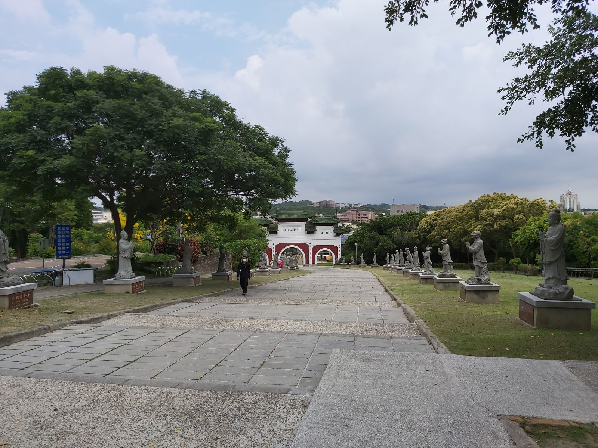

장화 팔괘산 하늘놀이터, 아이와 대불 보고 놀다 올까?
대불을 보고 내려오는 길에 아이가 한참 놀 수 있는 곳 — 시설과 쉬어 갈 곳을 먼저 알고 가면 편해요.
게시
장화 팔괘산 하늘놀이터(八卦山天空遊戲場)는 팔괘산 대불 풍경구 안, 옛 민족신촌(民族新村) 자리에 장화현이 만든 공원이에요. 2025년 10월 10일부터 시범 운영을 시작했고, 구름을 주제로 한 곡선형 놀이기구가 이어져 있어요. 아이와 대불을 보고 놀이터까지 들르는 일정을 생각한다면 무엇이 있고 언제 가면 편한지 장화현 공식 안내를 바탕으로 2026년 10월 기준으로 정리했어요.
01 · 장화 팔괘산 하늘놀이터, 한눈에 보기
| 항목 | 내용 (2026년 10월 기준) |
|---|---|
| 위치 | 장화시 卦山路 8-1호 일대, 팔괘산 대불 풍경구 안 |
| 개방시간 | 장화현 공원 안내에 '全天(종일)'로 적혀 있어요 |
| 어린이 시설 | 모래놀이장, 미끄럼틀, 클라이밍 네트, 트램펄린, 그네 |
| 함께 노는 시설 | 새둥지 그네, 휠체어로 탈 수 있는 회전판, 클라이밍 프레임 |
| 화장실 | 일반 3칸, 장애인 화장실 1칸, 가족(친자) 화장실은 없어요 |
| 주차 | 49면, 장애인 주차 2면 |
장화현은 이곳을 아이부터 어르신, 휠체어 이용자까지 함께 노는 '전 연령 공융(共融) 공원'으로 소개해요. 구름 미끄럼틀과 떠 있는 줄그물, 무장애 모래놀이장, 부모와 함께 타는 그네 구역, 잔디밭이 있고 밤에는 조명이 켜지도록 설계했다고 해요. 개장 때 장화현 발표에는 물놀이 구역과 그늘 정자, 선베드도 함께 소개됐어요.

02 · 팔괘산 놀이터 가기 전에 알아둘 점
한낮은 덥다 원글 여행자도 한낮에는 걷기 힘들 만큼 덥다고 했어요. 오전이나 해 질 무렵에 가고, 모자와 갈아입을 옷을 챙기면 편해요.
쉬어 갈 곳은 관광안내소 대불 구역 근처에 참산 국가풍경구의 팔괘산맥 생태 관광안내소(卦山路 13-7호)가 있어요. 안내 기준 매일 08:30~17:30(2026년 10월 기준)이고, 방문 전 구글맵에 등록된 영업시간을 확인하세요.
평일이 한산한 편 원글에서는 평일에 사람이 적어 여유롭게 놀았다고 했어요. 주말에는 붐빌 수 있어요.
가족 화장실은 없어요 공원 안내에 가족(친자) 화장실은 없다고 적혀 있어요. 기저귀를 갈아야 하는 아이라면 미리 준비해 두세요.
03 · 장화역에서 팔괘산 하늘놀이터 가는 법
타이중에서 장화역까지 타이중역에서 타이완철도(TRA) 남쪽 방향 일반열차를 타면 장화역에 내릴 수 있어요. 시간표와 요금은 방문 전 공식 안내를 확인하세요.
장화역에서 택시·우버 놀이터는 장화역에서 지도상 직선으로 약 1.3km지만 오르막이에요. 원글 여행자도 우버로 오가는 게 편했다고 했어요.
차로 간다면 공원 주차장이 49면이고, 대불 풍경구에도 주차장이 따로 있어요. 요금은 방문 전 공식 안내를 확인하세요.
천공보도(天空步道)와 묶기 놀이터 옆으로 팔괘산 천공보도 2기 구간이 이어져 있어요. 1기 구간은 2026년 3~8월 보수 공사로 닫혔던 적이 있으니 방문 전 장화현 공고를 확인하세요.

04 · 대불과 놀이터, 아이와 도는 순서
놀이터와 대불이 같은 풍경구 안에 있어서, 시원한 오전에 대불을 먼저 보고 내려와 놀이터에서 노는 순서가 무난해요. 더워지면 관광안내소에서 쉬었다가 택시로 장화역이나 시내 식당으로 이동하면 돼요. 젖은 옷을 갈아입힐 수 있게 수건과 여벌 옷을 챙기면 물놀이 구역에서도 편해요.
장화까지 가는 길이 고민이라면 타이중에서 일반열차를 타는 방법은 타이중 타이난 이동, 고속철보다 일반열차가 나을 때는?을, 같은 장화현의 루강으로 이어 가려면 타이중 루강 버스 9018 글을 참고하세요. 놀고 나서 갈 식당은 타이중 맛집 지도와 타이중 꼭 가볼 곳에서 고르고, 더위를 식히기 좋은 타이중 빙수 맛집 중 MINIMAL 상세 페이지도 함께 보세요.
지도에서 타이중 맛집도 찜해두세요
장화에서 놀고 타이중으로 돌아와 먹을 곳을 지도에서 미리 골라 보세요.